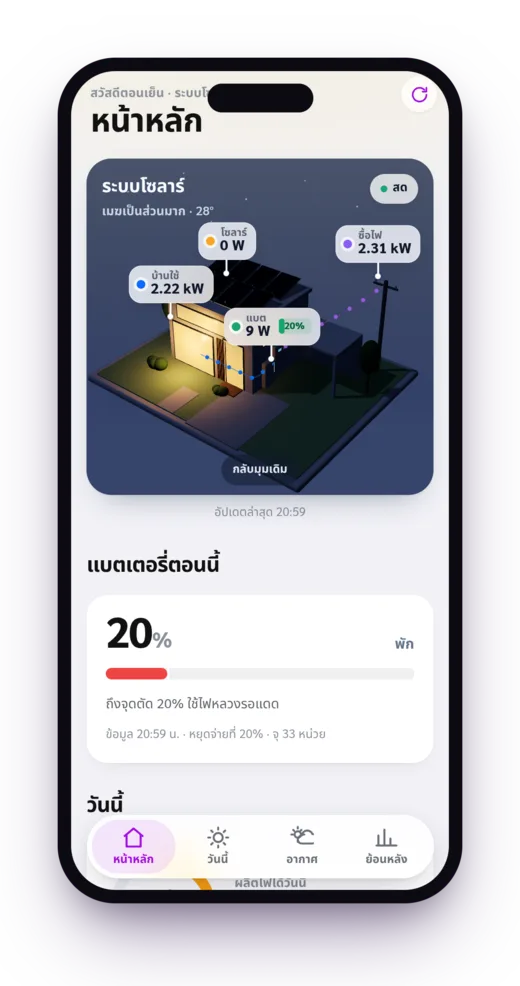
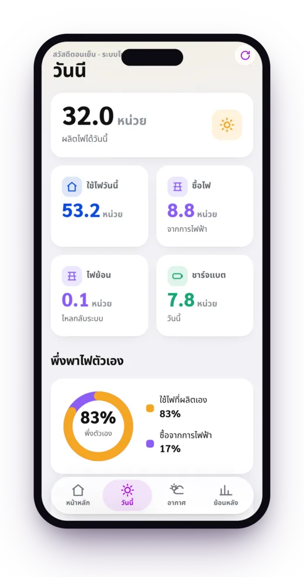
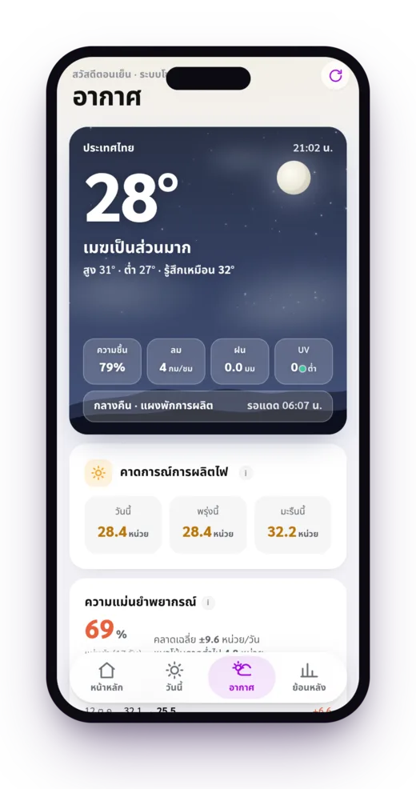
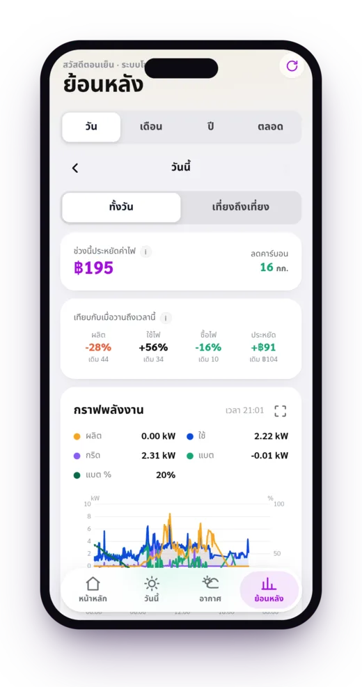
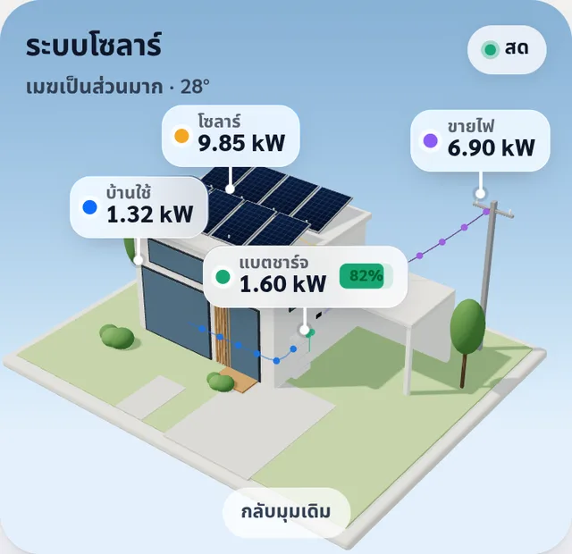
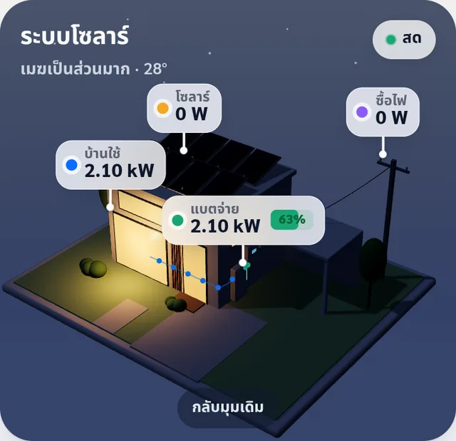
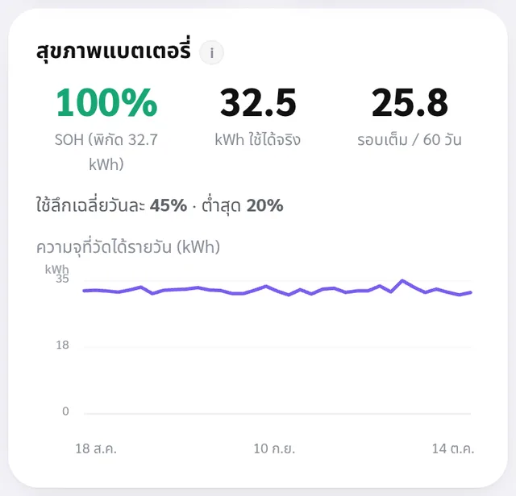

เห็นสด ทุกนาที
บ้าน 3D หมุนได้ จุดไฟวิ่งจากแผง แบต และเสาไฟเข้าบ้านตามทิศจริง
ผลิตไฟ ใช้ไฟ แบตเตอรี่ ซื้อ-ขายไฟ ครบในแอปเดียว ตัวเลขใหญ่ อ่านง่ายทุกวัย ติดตั้งบนมือถือได้ ไม่มีค่ารายเดือน
ใช้กับอินเวอร์เตอร์ Deye ที่ต่อ Deye Cloud · on-grid / hybrid / off-grid

ฟีเจอร์
ดึงข้อมูลจริงจาก Deye Cloud Open API แล้วแปลงเป็นภาษาคน ทุกสีมีคำกำกับ ปุ่มใหญ่ ใช้ได้ทั้งบ้าน
บ้าน 3D หมุนได้ จุดไฟวิ่งจากแผง แบต และเสาไฟเข้าบ้านตามทิศจริง
บอกว่ากำลังชาร์จหรือจ่ายเพราะอะไร และสุขภาพแบตจากการวัดจริง ไม่ใช่ค่าบนฉลาก
คาดผลิตไฟพรุ่งนี้จากพยากรณ์อากาศ แล้วปรับตัวเองทุกวันจากผลจริงของบ้านคุณ
กราฟราย วัน เดือน ปี เงินที่ประหยัดและคาดทั้งเดือน ดาวน์โหลด CSV ได้
อินเวอร์เตอร์ออฟไลน์ ไฟดับ แบตต่ำ ส่งเข้า Discord หรือ Telegram ยืนยันก่อนส่ง ไม่เตือนมั่ว
กุญแจ Deye อยู่ฝั่งเซิร์ฟเวอร์ คนในบ้านดูได้โดยไม่ต้องรู้รหัสบัญชี
หน้าจอ




กลางวัน · ผลิตเต็ม

กลางคืน · แบตจ่าย

สุขภาพแบต · วัดจริง
ติดตั้ง
สมัครที่ developer.deyecloud.com รับ App ID กับ App Secret
Cloudflare สร้างแอปและฐานข้อมูลให้ ใส่กุญแจ อีเมล รหัส Deye และ PIN ที่ต้องการ
เปิดลิงก์ของคุณบนมือถือ แล้วกดเพิ่มลงหน้าจอโฮม ใช้เหมือนแอปจริง
# หรือใช้คำสั่งเดียว npx wrangler login cp .dev.vars.example .dev.vars # ใส่ค่าลับ npm run setup # สร้าง D1 + ตั้งค่า + deploy
คำถามที่พบบ่อย
แอปดูระบบโซลาร์เซลล์ที่ใช้อินเวอร์เตอร์ Deye แบบเรียลไทม์เป็นภาษาไทย ดึงข้อมูลจาก Deye Cloud Open API แล้วแสดงผลิตไฟ ใช้ไฟ แบตเตอรี่ และซื้อ-ขายไฟ พร้อมพยากรณ์และสรุปเงินที่ประหยัด ติดตั้งเป็นแอปบนมือถือได้
ไม่ต้อง แอปรันบน Cloudflare Workers และ D1 ในโควต้าฟรี ระบบเก็บข้อมูลทุก 5 นาที (วันละ 288 ครั้ง) ต่ำกว่าลิมิตฟรี 100,000 ครั้งต่อวันมาก
ระบบที่ส่งข้อมูลขึ้น Deye Cloud ทั้ง on-grid, hybrid และ off-grid แอปปรับคำแนะนำตามชนิดระบบให้เอง ต้องมีบัญชีนักพัฒนาที่ developer.deyecloud.com
ภาษาไทยทั้งแอป ตัวเลขใหญ่อ่านง่าย มีพยากรณ์ที่เรียนรู้จากบ้านคุณ สุขภาพแบตจากการวัดจริง สรุปเงินที่ประหยัดรายเดือน แจ้งเตือน Discord หรือ Telegram และคนในบ้านดูได้ด้วย PIN
กุญแจและรหัสบัญชี Deye เก็บเป็นค่าลับฝั่งเซิร์ฟเวอร์ ไม่ส่งไปที่มือถือ เข้าแอปด้วย PIN หน้าแอปตั้งค่าไม่ให้ขึ้นในผลค้นหา และข้อมูลอยู่ในบัญชี Cloudflare ของคุณเอง
กดปุ่มติดตั้งแล้วใส่ค่าที่ระบบถาม หรือรัน npm run setup คำสั่งเดียว จะได้ลิงก์ของคุณเอง เปิดบนมือถือแล้วกดเพิ่มลงหน้าจอโฮม